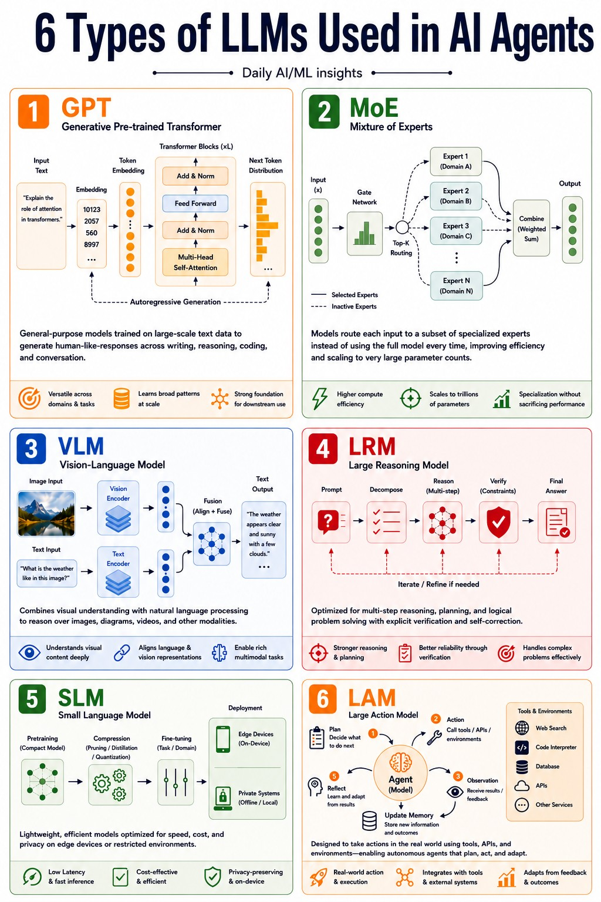

1GPT
通用生成底座，适合写作、编码、推理和对话；图里的定位是“universal AI engine”。
Camila 的这条 X 帖把 AI Agent 的模型谱系讲得很直白：GPT、MoE、VLM、LRM、SLM、LAM 不是同一类东西，而是面向不同任务的专用系统。
这条帖的真正价值不是“列了 6 个缩写”，而是把 AI Agent 的模型栈讲成了分工体系：通用生成、专家路由、多模态理解、深度推理、轻量部署、行动执行，各司其职。

图中原意：用 6 个模块解释 AI Agent 可能依赖的不同 LLM 系统——GPT、MoE、VLM、LRM、SLM、LAM。
作者先否定“所有 AI 模型都一样”的直觉，再用一组架构分类告诉读者：现代 AI agents 的底层不是单一模型，而是不同架构在不同任务上的组合。
帖子结尾没有停在解释，而是直接把问题抛给读者：Which model category do you think dominates the next 3 years?
通用生成底座，适合写作、编码、推理和对话；图里的定位是“universal AI engine”。
Mixture of Experts 用门控网络把请求路由给专家子网络，在效率、成本和规模之间找平衡。
Vision-Language Model，负责图像、图表、截图、视频与文本的多模态理解。
Large Reasoning Model，强调多步推理、规划、验证、自我纠错，主打 correctness over speed。
Small Language Model，适合低成本、低延迟、隐私友好的本地/边缘部署。
Large Action Model，核心不是“回答”，而是“行动”：Plan → Action → Observation → Reflection → Memory。
可抓取页面里没有公开回复：0 条。因此信息卡只保留原帖正文、配图和互动数据，不虚构评论内容。
5 likes / 4 bookmarks / 43 views。这个量级说明它有被收藏和传播，但还没有形成公开评论扩展。
这条 X 帖最有用的地方，是把 AI Agent 的未来路径从“一个更大的模型”转成“专用模型系统的协同”：以后真正拉开差距的，不只是 prompt，而是 routing、memory、tool usage、reasoning 和 infrastructure。